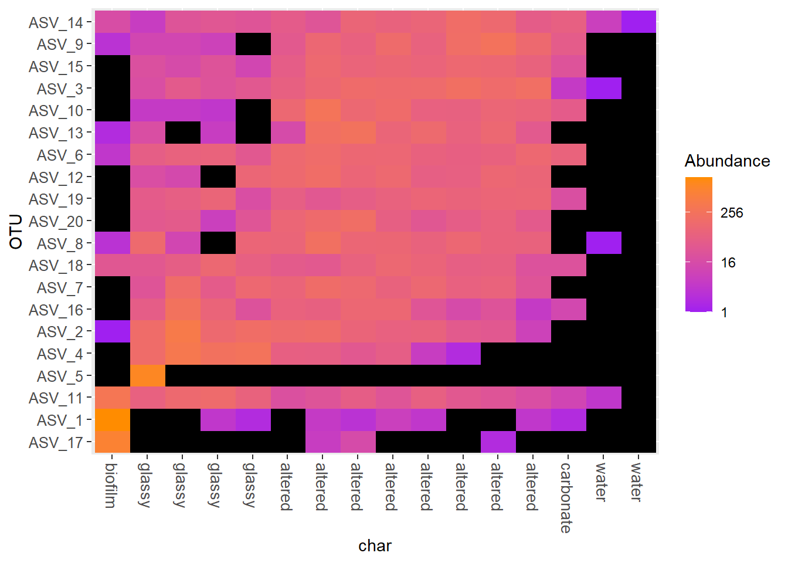
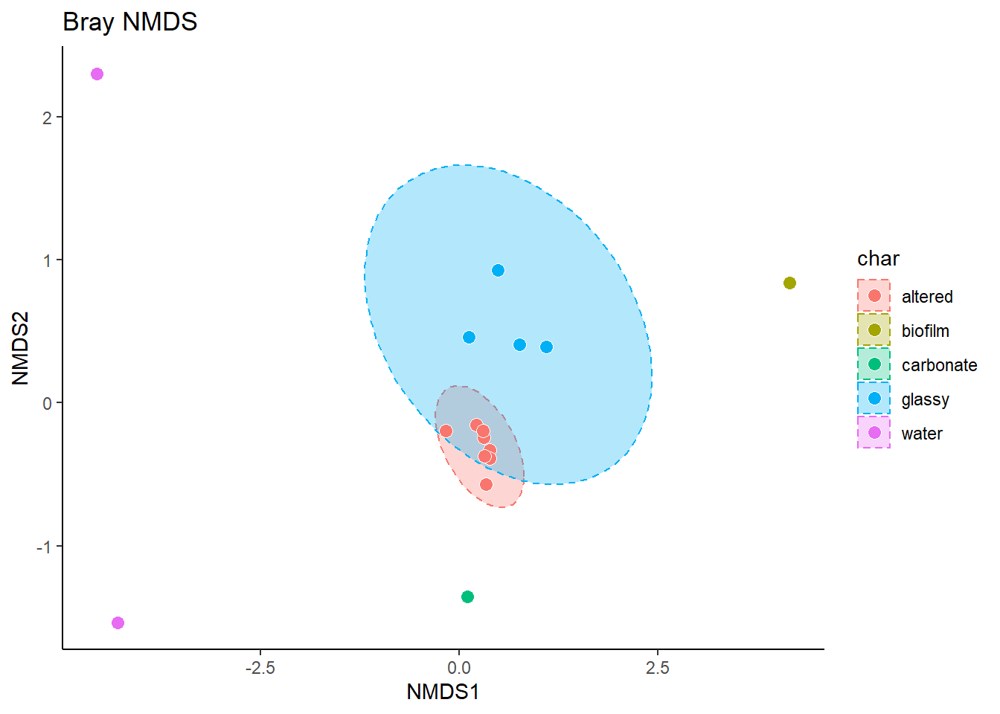

Chapter 4 Introduction to Statistical Analysis of the microbiome data
library(phyloseq)
library(tidyverse)
library(gt)This section provides a quick introduction to some common analytic methods used to analyze microbiome data. In previous sections we worked with microbiome generated data, but ran through some fairly standard protocols that would apply to any Illumina-seq generated data and FASTQ files.
Now we are at the visualisation and statistical analysis phase - and we should start to see the implementation of some very familiar R tools.
Briefly today we will use R to understand more about
Describing the microbial community composition of a set of samples
Estimating within- and between-sample diversity
Identifying differentially abundant taxa
4.1 Important files
We’re mostly going to be working with just 3 files now.
A count table: the number of reads for each unique sequence
A taxonomy table: the assigned taxonomy for each sequence according to the SILVA database
A sample file: this is the “metadata” it contains any information we have provided about the different samples
If you worked through the entirety of the previous session you will already have the necessary R objects in your workspace. If you didn’t we can load them using a .RData file. You should see that your Environment is suddenly populated by a number of R objects.
The one thing missing that we also need to load is a sample info object (it tells us meta-data about the origins and conditions of each environmental sample.)
sample_info_tab <- read.table("sample_info.tsv", header=T, row.names=1,
check.names=F, sep="\t")4.2 Phyloseq
Microbiome community analysis works really well with a package called phyloseq it allows you to make special R objects that hold the distinct sets of information on ASV abundance, taxonomy and relation to the environmental samples in one R object.
ps <- phyloseq(otu_table(asv_tab_no_contam, taxa_are_rows=T),
sample_data(sample_info_tab),
tax_table(asv_tax_no_contam))
ps## phyloseq-class experiment-level object
## otu_table() OTU Table: [ 2498 taxa and 16 samples ]
## sample_data() Sample Data: [ 16 samples by 4 sample variables ]
## tax_table() Taxonomy Table: [ 2498 taxa by 7 taxonomic ranks ]Note
Since we’ve already used decontam to remove likely contaminants in the previous steps, we’re dropping the “blank” samples from our count table - so now there are 16 samples total.
Take a look at each of the three objects: asv_tab_no_contam, sample_data, tax_table. There are just simple lists - can you comfortably work out the information they contain?
asv_tab_no_contamA count table: the number of reads for each unique sequenceasv_tax_no_contamA taxonomy table: the assigned taxonomy for each sequence according to the SILVA databasesample_info_tabA sample file: this is the “metadata” it contains any information we have provided about the different samples
4.3 Relative abundance of bacteria by taxonomic Class
We will use some functions provided by phyloseq to agglomerate the reads to Class-level and plot the results
taxonomy <- ps %>%
tax_glom(taxrank="class") %>% ### Preserves taxonomy only to Taxonomic level class
transform_sample_counts(function(x){x/sum(x)})%>% ### this function turns Abundance from raw counts to a relative proportion
psmelt() %>% ###converts phyloseq object into a tibble
filter(Abundance >0.05) ### remove any ASVs at less than 5% abundanceOften an early step in many microbiome projects to visualize the relative abundance of organisms at specific taxonomic ranks.
taxonomy %>%
ggplot(aes(x=Sample, y=Abundance, fill=class))+
geom_bar(stat="identity") The ability to discriminate between more than say a dozen colors in a single plot is a limitation of the stacked bar plot - so we have filtered out less abundant reads (<5%). We run the risk that we might miss something important here, so its important to visualise the data in different ways.
The ability to discriminate between more than say a dozen colors in a single plot is a limitation of the stacked bar plot - so we have filtered out less abundant reads (<5%). We run the risk that we might miss something important here, so its important to visualise the data in different ways.
There are a total of 10 Bacterial classes (at greater than 5% abundance).
Let’s generate boxplots according to char and facet these according to Bacterial class. This will allow us to compare how different bacterial classes appear to change in relative abundance between samples.
Try and produce something similar to the plot below

Think about what you can infer from these plots?
4.4 Alpha diversity - community richness
This is a common ecological term, and one that applies just as well when we consider microbial ecosystems.
What is the mean species diversity in the different sample sites?
ps_richness <- estimate_richness(ps)
ps_richnessThis command generates a number of different diversity indices.
Firstly we can take this information and use join functions to attach it back onto our sample metadata
sample_info_tab$Sample <- rownames(sample_info_tab)
ps_richness$Sample <- rownames(ps_richness)
full_richness <- left_join(sample_info_tab, ps_richness, "Sample")
full_richness | temp | type | char | color | Sample | Observed | Chao1 | se.chao1 | ACE | se.ACE | Shannon | Simpson | InvSimpson | Fisher |
|---|---|---|---|---|---|---|---|---|---|---|---|---|---|
| 2.0 | water | water | blue | BW1 | 61 | 62.5000 | 2.5911387 | 61.88289 | 3.569938 | 3.576981 | 0.9585698 | 24.13700 | 12.04096 |
| 2.0 | water | water | blue | BW2 | 204 | 205.9091 | 2.1571603 | 205.71458 | 7.069400 | 4.436499 | 0.9750331 | 40.05305 | 43.45043 |
| 13.7 | rock | glassy | black | R10 | 383 | 385.4375 | 2.1449492 | 386.66260 | 9.717693 | 5.079826 | 0.9872712 | 78.56183 | 81.57801 |
| 7.3 | biofilm | biofilm | darkgreen | R11BF | 144 | 145.1538 | 1.5236935 | 146.00669 | 5.980036 | 3.309788 | 0.9044015 | 10.46042 | 25.68876 |
| 7.3 | rock | glassy | black | R11 | 281 | 284.4737 | 2.9104269 | 284.57048 | 8.337302 | 4.812376 | 0.9851114 | 67.16529 | 59.63308 |
| NA | rock | altered | chocolate4 | R12 | 524 | 525.8947 | 1.9684441 | 525.94449 | 11.362166 | 5.789071 | 0.9956479 | 229.77212 | 115.57917 |
| 8.6 | rock | altered | chocolate4 | R1A | 497 | 501.2500 | 2.9984998 | 502.32876 | 11.107301 | 5.666947 | 0.9945360 | 183.01554 | 115.04680 |
| 8.6 | rock | altered | chocolate4 | R1B | 577 | 579.6000 | 2.2526890 | 580.24471 | 11.965009 | 5.812676 | 0.9953007 | 212.79743 | 129.04718 |
| 8.6 | rock | altered | chocolate4 | R2 | 608 | 609.4062 | 1.5321223 | 610.17688 | 12.296746 | 5.850938 | 0.9955702 | 225.74143 | 133.85232 |
| 12.7 | rock | altered | chocolate4 | R3 | 566 | 567.5517 | 1.6446664 | 568.36545 | 11.819663 | 5.788769 | 0.9953827 | 216.57487 | 122.16253 |
| 12.7 | rock | altered | chocolate4 | R4 | 643 | 644.2857 | 1.4737632 | 644.75628 | 12.645710 | 5.718854 | 0.9940234 | 167.31991 | 137.19651 |
| 12.7 | rock | altered | chocolate4 | R5 | 624 | 624.2069 | 0.5163104 | 624.78554 | 12.367463 | 5.966462 | 0.9962834 | 269.06381 | 137.21126 |
| 12.7 | rock | altered | chocolate4 | R6 | 523 | 527.2857 | 3.1338410 | 527.52112 | 11.340777 | 5.711816 | 0.9948403 | 193.80933 | 115.90757 |
| NA | rock | carbonate | darkkhaki | R7 | 435 | 436.7838 | 1.7397113 | 438.10995 | 10.011218 | 5.557851 | 0.9939838 | 166.21652 | 110.12229 |
| 13.5 | rock | glassy | black | R8 | 424 | 428.1379 | 3.0460370 | 428.53605 | 10.245312 | 5.295582 | 0.9910943 | 112.28782 | 91.16232 |
| 13.7 | rock | glassy | black | R9 | 296 | 300.5652 | 3.3753169 | 300.44067 | 8.397187 | 4.348445 | 0.9517400 | 20.72112 | 63.39469 |
4.4.1 Analyse and plot
We now have a tidy data frame with sample information and a variety of diversity indices.
Using the Shannon index as the measure of diversity - can you construct a figure to show the diversity differences between treatments?
Again using the Shannon index - can you construct a
general linear modelto work out which treatments/effects might be having a significant effect on diversity?
4.5 Beta diversity
4.5.1 Heatmaps
Heatmaps are basically false colour images where cells in the matrix with high relative values are coloured differently from those with low relative values. Heatmaps can range from very simple blocks of colour with lists along 2 sides, or they can include information about hierarchical clustering, and/or values of other covariates of interest.
We will make a simple heatmap here, but a common addition might be a dendrogram - a phylogenetic tree to indicate how closely related different
ps_top20 <- prune_taxa(names(sort(taxa_sums(ps),TRUE)[1:20]), ps) ## subset to include only the top 20 most abundant ASVs
plot_heatmap(ps_top20,"MDS",distance = "bray", ## here we are setting up the parameters for the heat map
sample.label="char", ## set the x axis to display by sample
low="purple", ## set the color for low abundance OTUs
high="darkorange") ## set the color for high abundance OTUs
4.5.2 Multidimensional analysis
Often in ecological research, we are interested not only in comparing univariate descriptors of communities, like diversity (above), but also in how the constituent species — or the composition — changes from one community to the next.
One common tool to do this is non-metric multidimensional scaling, or NMDS. The goal of NMDS is to collapse information from multiple dimensions (e.g, from multiple communities, sites, etc.) into just a few, so that they can be visualized and interpreted.
Consider a single axis representing the abundance of a single species. Along this axis, we can plot the communities in which this species appears, based on its abundance within each.
Now consider a second axis of abundance, representing another species. We can now plot each community along the two axes (Species 1 and Species 2).
Keep going and imagine how many axes we would have to produce!!!!
The goal of NMDS is to represent the original position of communities in multidimensional space as accurately as possible using a reduced number of dimensions that can be easily plotted and visualized (and to spare your thinker).
NMDS does not use the absolute abundances of species in communities, but rather their rank orders. The use of ranks omits some of the issues associated with using absolute distance (e.g., sensitivity to transformation), and as a result is a flexible technique
### Ordination using built in functions in phyoseq (calls vegan)
ord.nmds.bray <- ordinate(ps, method="NMDS",k=2, distance="bray")## Square root transformation
## Wisconsin double standardization
## Run 0 stress 0.04869473
## Run 1 stress 0.0478881
## ... New best solution
## ... Procrustes: rmse 0.01639951 max resid 0.04610477
## Run 2 stress 0.04346713
## ... New best solution
## ... Procrustes: rmse 0.05294335 max resid 0.1316673
## Run 3 stress 0.05216743
## Run 4 stress 0.04346694
## ... New best solution
## ... Procrustes: rmse 0.0006780795 max resid 0.002148741
## ... Similar to previous best
## Run 5 stress 0.05216581
## Run 6 stress 0.04346719
## ... Procrustes: rmse 0.0007087707 max resid 0.002245379
## ... Similar to previous best
## Run 7 stress 0.04788334
## Run 8 stress 0.05218892
## Run 9 stress 0.04346725
## ... Procrustes: rmse 0.0002716828 max resid 0.0008608943
## ... Similar to previous best
## Run 10 stress 0.04346722
## ... Procrustes: rmse 0.0007270832 max resid 0.0023034
## ... Similar to previous best
## Run 11 stress 0.04788122
## Run 12 stress 0.04346737
## ... Procrustes: rmse 0.0008170541 max resid 0.002587991
## ... Similar to previous best
## Run 13 stress 0.04788857
## Run 14 stress 0.043467
## ... Procrustes: rmse 6.761702e-05 max resid 0.0002142312
## ... Similar to previous best
## Run 15 stress 0.05217513
## Run 16 stress 0.05218083
## Run 17 stress 0.04346707
## ... Procrustes: rmse 0.000608542 max resid 0.001927707
## ... Similar to previous best
## Run 18 stress 0.1096243
## Run 19 stress 0.05584216
## Run 20 stress 0.04950525
## *** Solution reachedYou should see each iteration of the NMDS until a solution is reached (i.e., stress was minimized after some number of reconfigurations of the points in 2 dimensions). You can increase the number of default iterations using the argument trymax=. which may help alleviate issues of non-convergence. If high stress is your problem, increasing the number of dimensions to k=3 might also help.
Often in ecological research, we are interested not only in comparing univariate descriptors of communities, like diversity (above), but also in how the constituent species — or the composition — changes from one community to the next.
One common tool to do this is non-metric multidimensional scaling, or NMDS. The goal of NMDS is to collapse information from multiple dimensions (e.g, from multiple communities, sites, etc.) into just a few, so that they can be visualized and interpreted.
Consider a single axis representing the abundance of a single species. Along this axis, we can plot the communities in which this species appears, based on its abundance within each.
Now consider a second axis of abundance, representing another species. We can now plot each community along the two axes (Species 1 and Species 2).
Keep going and imagine how many axes we would have to produce!!!!
The goal of NMDS is to represent the original position of communities in multidimensional space as accurately as possible using a reduced number of dimensions that can be easily plotted and visualized (and to spare your thinker).
NMDS does not use the absolute abundances of species in communities, but rather their rank orders. The use of ranks omits some of the issues associated with using absolute distance (e.g., sensitivity to transformation), and as a result is a flexible technique
We can use the function plot.ordination to use our NMDS scaling to position our samples on a ggplot
ord1<-plot_ordination(ps, ord.nmds.bray, color="char", title="Bray NMDS")
ord1
And we can add customisations to improve the plot
ord1 + stat_ellipse(type="norm",
geom="polygon",
aes(fill=char),
alpha=0.3,
linetype="dashed") +
geom_point(pch=21, aes(fill=char), colour="white", stroke=0.5, size=3)+
theme_classic()
4.6 Question
We have now produced several different visualisations and analyses of the microbiome communities from these deep sea samples. What do you think are the most important or interesting findings here?
4.7 Summary
This is a very brief introduction to using big data. Hopefully you can see that many of the command line tools, data cleaning and analysis and visualisation you have been practising prepare you for Big Data Biology.
In this example, in order to have generated and processed this data, you would have needed to know
- Sampling techniques
- Molecular lab skills
- Data analysis and coding knowledge
- Ecological skills (community analysis)
Biology is increasingly interdisciplinary - and the skills you learn in one module should be transferable to other things you do.
And remember at the heart of everything is Data! It doesn’t matter what you are studying or why - good data skills are fundamental.
Thank you!